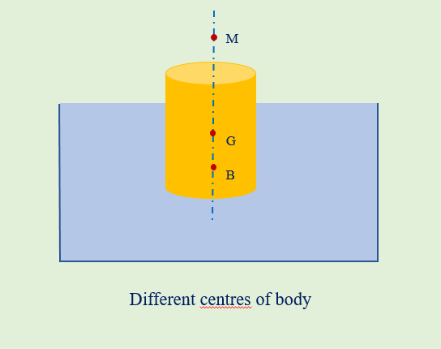
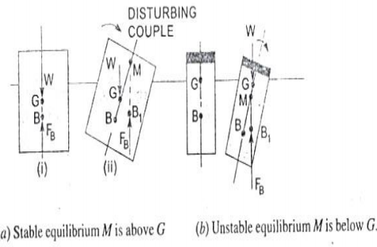

<<<<<<< HEAD

=======
>>>>>>> b24fe264b78bd55d698d6cd34510448bb6f4fc17
Archimedes principle:
The Archimedes principle states that the buoyant force on an object submerged in a fluid is equal to the weight of the
fluid that is displaced by that object.
Buoyancy:
When a body is immersed in a fluid, an upward force is exerted by the fluid on the body. This upward force is equal to
the weight of the fluid displaced by the body and is called the force of buoyancy or simply buoyancy.
Centre of Buoyancy:
It is defined as the point, through which the force of buoyancy is supposed to act. As the force of buoyancy is a
vertical force and is equal to the weight of the fluid displaced by the body, the centre of buoyancy will be the
centre of gravity of the fluid displaced.
Centre of gravity:
Center of Gravity is the point in a body where the gravitational force may be taken to act.
Meta-centre:
It is defined as the point about which a body starts oscillating when the body is tilted by a small angle.
The meta-centre may also be defined as the point at which the line of action of the force of buoyancy will meet the
normal axis of the body when the body is given a small angular displacement.
Meta-centric height:
The distance between the Meta-centre of a floating body and the centre of gravity of the body is called meta-centric
height.

Theory
Equilibrium of a Body1. Stable equilibrium
2. Unstable equilibrium
3. Neutral equilibrium
1. Stable equilibrium
When a body is given a small angular displacement, i.e. it is tilted slightly by some external force and then it
returns back to original position due to internal forces. Such equilibrium is called stable equilibrium.
2. Unstable equilibrium
If a body does not return to its original position from the slightly displaced angular position and moves father
away when give a small angular displacement such equilibrium is called an unstable equilibrium.
3. Neutral equilibrium
The body remains at rest in any position to which it may be displaced, no net force tends to return the body to
its original state or to drive it further away from the original position, is called neutral equilibrium.
Conditions of equilibrium of a floating and submerged bodies:
The stability of a body depends on relative position of centre of buoyancy (B) and centre of gravity(G)
Stability of a sub-merged body:
Stability of submerged body is determined from relative position of Centre of gravity and centre of buoyancy.
The position of centre of gravty and centre of buoyancy in case od sub-merged body are fixed.

• Stable equilibrium-
A body is said to be in stable equilibrium when FB= W and B is above G. Weight W acts in downward direction
while buoyant force act in upward direction. When body is given small displacement in clockwise direction
the couple generated due weight and centre of buoyancy tries to rotated the body in anti-clockwise direction
and hence body remains stable.
• Unstable equilibrium-
A body is said to be in unstable equilibrium if FB =W and G is above B. When body is in unstable equilibrium
it does not regain its initial position under small displacement. If body is given small angular displacement
in clockwise direction the couple generated due to weight and centre of buoyancy also tried to rotate the body
in same direction which leads to unstable equilibrium.
• Neutral equilibrium-
In case of neutral equilibrium B and G coincides with each other and FB=W. So bothe forces acting at same point
in opposite direction nullifies each other’s effect.
Stability of floating body:
The stability of floating body is determined from position of Metacentre. The relative position of Metacentre
and Centre of gravity indicates type of equilibrium. When the body undergoes angular displacement about horizontal
axis the shape of submerged volume changes and as result Centre of buoyancy moves relative to the body.
• Stable equilibrium:
The floating body will be stable equilibrium if M is above G. If a body is given small angular displacement
in clockwise direction amount of water displaced changes and hence centre of buoyancy shifts from B to B1
such that the vertical line through B1 at M. Then the buoyant force FB acts through B1 and weight acts through
G which constitutes a couple in anti-clockwise direction which brings back the body in initial position.
• Unstable equilibrium:
In case of unstable equilibrium M lies below G. When body is given small angular displacement in clockwise
direction the couple generated due to buoyant force and weight W also acts in same direction which overturns the body.
• Neutral equilibrium:
If Metacentre M is at the centre of gravity G , the body will be in neutral equilibrium.

2.Studying effect of relative positions of Centre of gravity, centre of buoyancy
and metacentre on stability of body.


Simulator for the Experiment
click here for simulation
1. A body will be in a stable equilibrium in a floating body condition if
2. As a ship enters into a river from sea, one can expect that
3. The resultant of all normal pressures on a body immersed in liquid acts
4. The buoyancy force is
5. The necessary and sufficient condition for bodies in flotation to be in stable
equilibrium is that the centre of gravity is located below the
6. The submerged body will be in stable equilibrium if the centre of buoyancy B
7. The centre of gravity of the volume of the liquid dispersed by an immersed body is called a
8. If B is centre of buoyancy, G is the centre of gravity and M is Metacentre of floating body the body will be in stable equilibrium if
9. During floods, water entered an office having wooden tables. The position of tables, if floating will be
10. A bucket of water is hanging from a spring balance.
An iron piece is suspended into water without touching any of
the side of bucket from another support The spring balance reading will

- A textbook of Fluid Mechanics and Hydraulic Machines by Dr. R. K. Bansal
- Hydraulics and Fluid Mechanics by Dr. P N Modi and S M Seth
- UPSC Engineering services previous year questions of mechanical Engineering
- https://nptel.ac.in/content/storage2/courses/112104118/lecture-5/5-7_stability_floating_fluid.htm